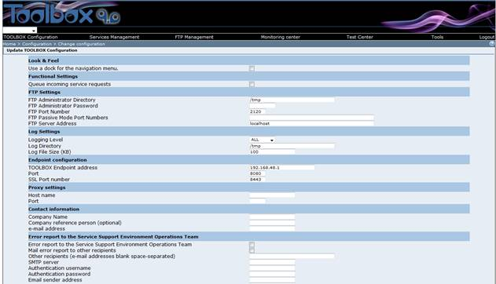

The User Login Page allows registered administrators to login the TOOLBOX application.
After having started the TOOLBOX , launch the Browser and, in the address bar, type:
http://ApacheOrTomcat_Host/TOOLBOX/
The browser should display the login page
If you don't see this page, the Web Application has been not installed correctly. Please perform again the installation procedure.
Select the language. Currently Italian and English are supported.
Fill the TOOLBOX ADMINISTRATOR username and password. The browser should display the main page
The version number can change according to the TOOLBOX released version.
 After the first installation the TOOLBOX configuration page should be displayed
After the first installation the TOOLBOX configuration page should be displayed
